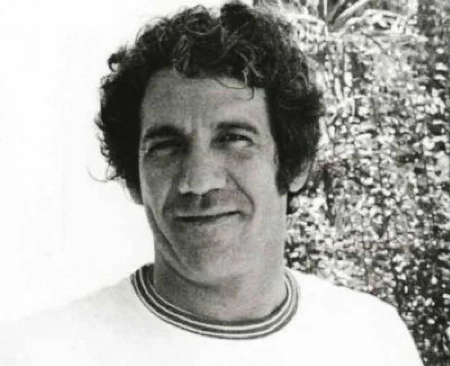

Álvaro Cepeda Samudio
(1926-1972)
🌟 Artista Destacado del MAMB 2026
Uno de los narradores más innovadores de Colombia y figura clave del Grupo de Barranquilla, el legendario círculo intelectual que transformó las letras latinoamericanas junto a Gabriel García Márquez. Influenciado por Faulkner y Hemingway, Cepeda Samudio forjó un estilo directo, sin concesiones, profundamente caribeño. Su novela "La casa grande" (1962) narra la masacre de las bananeras desde una multiplicidad de voces, siendo considerada una obra maestra de la literatura colombiana. Además de escritor y periodista, fue cineasta y coleccionista de arte; su casa era un punto de encuentro para artistas, escritores y pensadores del Caribe.